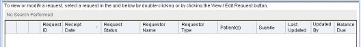

Open topic with navigation
Find/Create Request form
The Find/Create Request form enables you to:
- Search for requests using various search criteria
- Create requests
To open the form
Select Requests > Find / Create Request.
Item descriptions
Main content pane
Patient Last Name box
Allows you to enter all or part of a patient's last name, beginning with the first letter of the name.
- If used alone, must contain at least three characters
- If combined with a first name value, at least three characters must be entered across both fields
Patient First Name box
Allows you to enter a patient's full or partial first name, beginning with the first letter of the name.
- If used alone, must contain at least three characters
- If combined with a last name value, at least three characters must be entered across both fields
Patient DOB
A patient's date of birth to find on a request.
- Must be combined with at least one other search field
- Month, day, and year values can be manually edited
Patient SSN
The Social Security Number for the patient to find on a request.
Accepts all or only some of the patient's encounter or account number, beginning with the first character.
MRN
The patient's medical record number. Combines with Facility to render a unique patient identifier.
When used for searching:
- Accepts all or part of the MRN, beginning with the first character
- Requires at least three characters
When used for data entry:
- Enabled only for non-OneContent patients and only if you have required permissions
- Defaults to blank
Enc/Acct
The encounter or account number for the patient to find on a request.
Accepts all or only some of the patient's encounter or account number, beginning with the first character.
Facility
The facility where patient care occurred in which to find a request.
- Defaults to All Facilities
- Displays names for only the facilities you are permitted to access
- Must be combined with at least one other search field
EPN
Enterprise Person Number. EPN is an identifier created by an Enterprise Master Person Index (EMPI) system to uniquely identify a person across all enterprise systems and facilities.
- Displays only for EPN systems
- Displays the EPN prefix that is configured at the OneContent (if any)
- Requires a minimum of three search characters (excluding any prefix defined in the OneContent application)
- Returns one patient record per EPN
- If the search is filtered on a single facility, the system displays encounters for only that facility for that patient
Requestor Name
Allows you to enter all or the beginning characters of a requestor name to find on a request. May also be used to filter the result set by requestor.
Requires a minimum of two characters.
Requestor Type
Allows you to select a requestor type to find for a request. May also be used to filter the result set by requestor type.
- Lists all requestor types currently defined for your system
- Defaults to All Requestor Types
Request Status
The status of the request to find. May also be used to filter the requests displayed by status.
Options are:
- All Statuses (default selection)
- Auth-Received
- Auth-Received Denied
- Logged
- Completed
- Denied
- Canceled
- Pended
- Pre-Billed
Request Reason
A reason to find on a request.
Lists all reasons for creating a request that are currently defined by your site.
Defaults to <Please select>.
Displays in read-only mode when the request status is Complete or Cancelled.
Balance Due
Allows you to specify an operator (either less than or equal to, or greater than or equal to) and an amount for comparison to find requests.
Options are:
- At Least (default value; works like greater than or equal to)
- At Most (works like less than or equal to)
- Equals (requires an exact match)
Receipt Date
Allows you to identify the receipt date of a request to find.
Options are:
- All to return all requests that match the other search criteria, regardless of date
- 30 days, 60 days, or 90 days previous to the current day; returns only requests that fall within the period you select and that match the other search criteria
- Custom Range to enable the From and To fields to enter a date range of your choosing
Invoice Number
An invoice number by which to find a request. Each invoice has a unique identifier. The search will find an exact match.
Requires a minimum of one character.
Request ID box
A request ID by which to find a request. Each request has a unique identifier. The search will find an exact match.
Requires a minimum of one character.
Completed Date box
The date the request was completed/released.
Options are:
- All to return all requests that match the other search criteria, regardless of completion date
- 30 days, 60 days, or 90 days previous to the current day; returns only requests that fall within the period you select and that match the other search criteria
- Custom Range to enable the From and To fields to enter a date range of your choosing
Find Request button
Triggers the search based on the criteria you have entered.
Enabled only when:
- You have entered data in at least one field other than Patient DOB or Facility with at least 3 characters in each field you want to search by.
- You search using the last name and first name fields, and you have entered at least three characters between the two.
- You search using Patient DOB or Facility, and another search criterion that contains the required minimum number of characters.
- You search using both Patient DOB and Facility.
Note: All other fields require a minimum of two characters for searching.
New Request button
Enables you to navigate to the Request Information form, where you can create a new request.
Always enabled.
Reset button
Discards unsaved entries, clears all data entry boxes or restores them to their default states, clears any search results, and permits you to start over.
Detail pane

Requests grid
Displays a list of requests based on the search criteria and allows you to a select request.
Initially sorted on Receipt Date in oldest to most recent order, then on Status. Can be sorted on all columns.
Note: If a request contains records from facilities that you are not allowed to access, the detail pane lists the request in red text and masks data in the following columns: Requestor Name, Requestor Type, Patient(s), and Subtitle. If you select the request, the system disables the View/Edit Request button.
The grid contains the following information:
- Icon columns
Reserved for icons that indicate a request attribute.
In-use icon; hover the mouse over the icon to see the name of the person who is accessing the request.
Indicates that the OneContent patient or an encounter or both are locked.
Indicates a non-OneContent VIP patient or that an OneContent VIP encounter exists.
- Request ID
Displays the ID assigned by the system.
- Receipt Date
Displays the date the request was received.
Used as the default sort in oldest to most recent order.
Format is based on the locale settings of your operating system.
- Request Status
The status of the request.
Initial sort order is: Auth Received, Auth Received Denied, Canceled, Completed, Denied, Logged, Pended, Pre-Billed.
- Requestor Name
The name of the entity who submitted the request.
Initial sort order is alphanumeric ascending.
- Requestor Type
The type of entity who submitted the request.
Initial sort order is alphanumeric ascending.
- Patient(s)
Lists up to 20 patient(s) on the request in alphanumeric ascending order separated by a colon (:). If more patient names exist on a request, the system appends an ellipsis (...) to the list of names. To display the remaining names in the list, hover the cursor over that cell.
- Subtitle
Index information captured when an authorization request is scanned.
Shows different information, depending on whether the document goes to a patient folder or to a day folder.
- For individual patients:
Format is: <patient_LN>,<first initial>-<Facility>
Example: Davis,M-ATL
- For day folders:
Format is: <receipt_date in yyyymmdd format>-<Facility>
Example: 20100630-ATL
- Last Updated
The date when the request was last updated.
Initial sort order is most recent to oldest date.
Format is based on the locale settings of your operating system.
- Updated By
The user who last updated the request.
Initial sort order is alphanumeric ascending.
Format is: LastName, FirstName MiddleInitial
- Balance Due
Displays the total charges (in dollars) for the request.
Initial sort order is numeric ascending.
View/Edit Request button
Displays request information for the currently selected request.
Enabled after you select a request. (Remains disabled if you select a restricted request.)